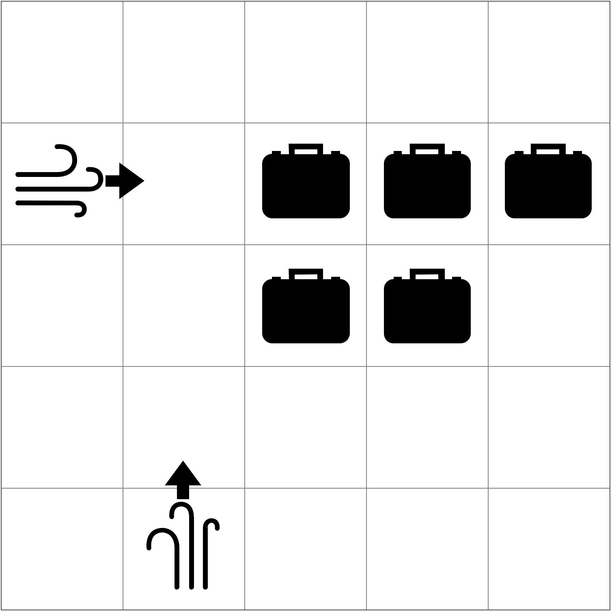
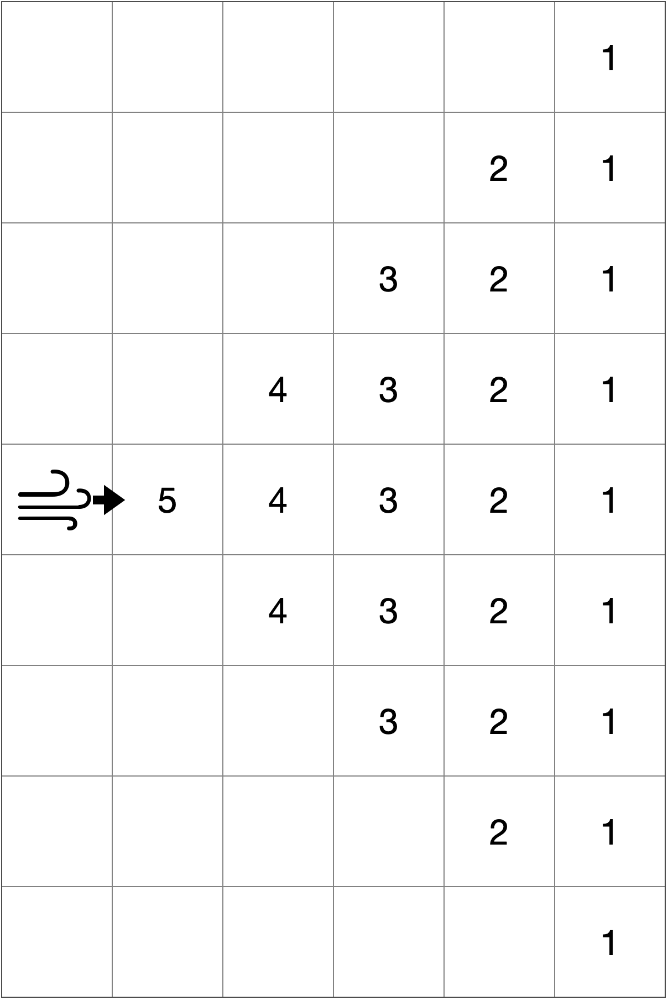
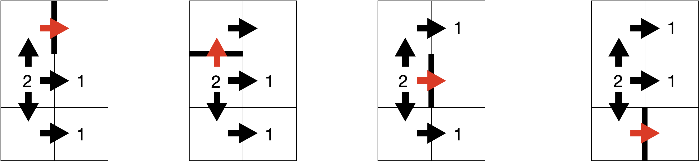
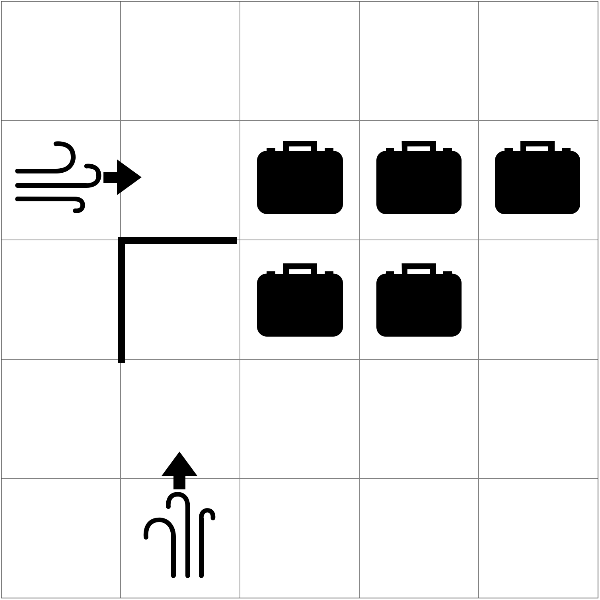
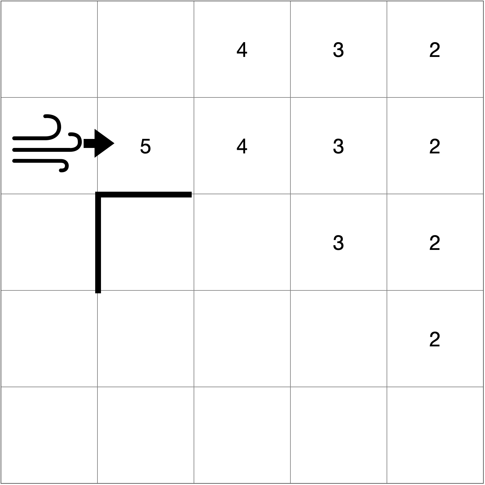
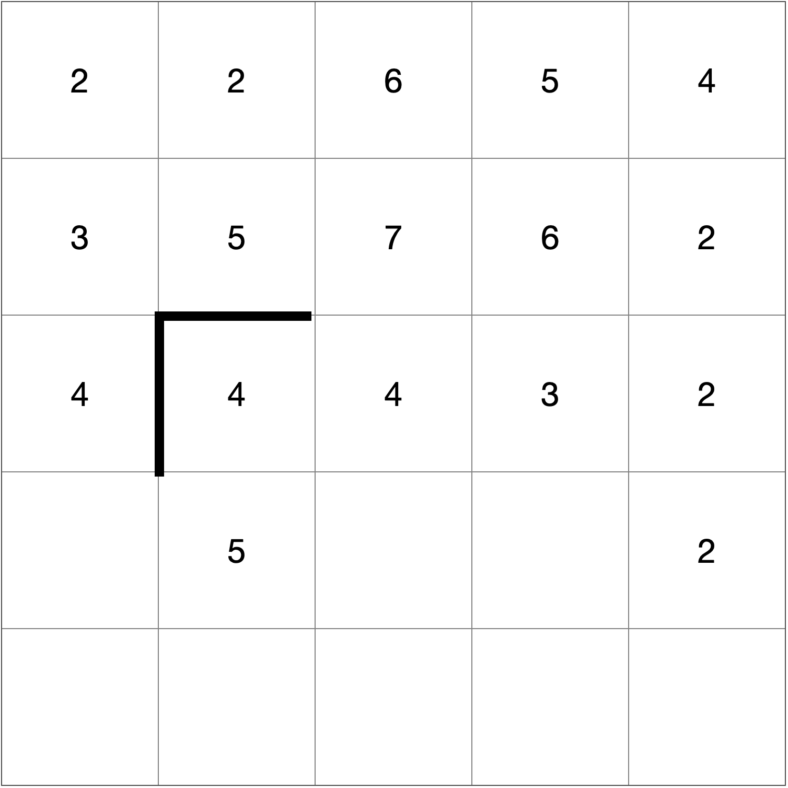
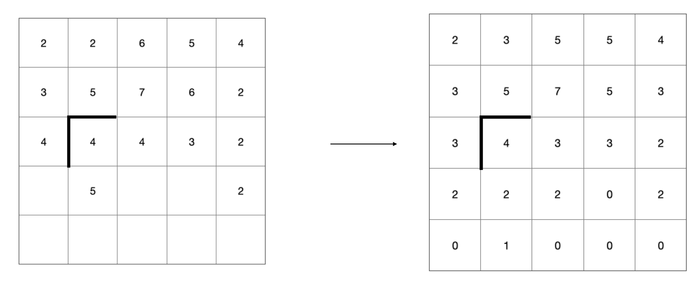
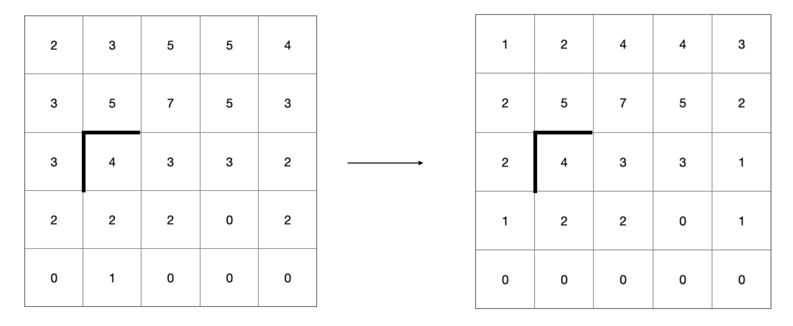

0에서 5 사이의 숫자로 이루어져 있는 n * n 크기의 격자 정보가 주어집니다. 0은 빈 공간을, 1은 사무실 구역을, 2는 에어컨이 놓여있으며 왼쪽 방향을 향하고 있음을, 3은 에어컨이 놓여있으며 위를 향하고 있음을, 4는 에어컨이 놓여있으며 오른쪽을 향하고 있음을, 5는 에어컨이 놓여있으며 아래를 향하고 있음을 의미합니다.
예를 들어 5 * 5 크기의 다음과 같이 숫자가 주어진 경우를 생각해봅시다.
0 0 0 0 0
4 0 1 1 1
0 0 1 1 0
0 0 0 0 0
0 3 0 0 0
알아보기 쉽게 그림으로 나타낸다면 다음과 같이 표현할 수 있습니다.
에어컨이 사무실을 시원하게 하는 과정은 아래 4가지 과정을 거칩니다.
- 에어컨의 바람이 나와서 아래 그림의 나온 수만큼 공기를 시원하게 합니다. 
- 시원한 공기들이 섞이기 시작합니다.
- 외벽에 있는 칸에 대해서만 시원함이 1씩 감소합니다.
에어컨 방향이 오른쪽이라할 때 처음 공기가 전파된 위치에서 위쪽 45도, 오른쪽, 아랫쪽 45도 기준으로 퍼지게 되며, 가는 방향에 벽이 있으면 전파가 진행되지 않습니다.
예를 들어 아래 그림과 같이 벽이 있다면 공간의 시원한 정도는 다음과 같이 결정됩니다. 즉, 직진하던 방향으로는 벽이 없으면 직진이 가능하며, 위쪽 45도의 경우 위, 우측 순서로 이동하기 때문에 둘 다 벽이 없어야만 전파가 됩니다. 마찬가지로 아래쪽 45도의 경우 아래, 우측 순서로 이동하기 때문에 둘 다 벽이 없어야만 전파가 됩니다.
처음 주어진 예시에서는, 벽이 다음과 같이 2개가 주어져 있다고 생각해보겠습니다.
2행 1열에 있는 에어컨의 경우, 다음과 같이 시원함이 전파됩니다.
또, 5행 2열에 있는 에어컨의 경우, 다음과 같이 시원함이 전파됩니다.
새로운 시원함의 생성은, 모든 에어컨으로부터 나오는 시원함의 합으로 이루어지게 됩니다. 따라서, 두 에어컨으로 인해, 다음과 같이 공기가 시원해집니다. 그림을 보면 알 수 있듯이, 에어컨이 놓여있는 자리에도 시원함이 생길 수 있습니다.
시원한 공기들은 서로 인접한 칸들에 대해 시원함이 높은 곳에서 낮은 곳으로 ⌊시원함의 차이 / 4⌋ 만큼 전파됩니다. 이는 모든 칸에 대해 동시에 일어나며, 벽을 사이에 두고 있는 칸끼리는 일어나지 않음에 유의합니다. 예를 들어 다음과 같이 변하게 됩니다.
따라서 1번 과정에서의 결과에서 공기들이 섞여 아래와 같은 결과가 나오게 됩니다.
바깥쪽과 맞닿아있는 칸들에 대해서만 시원함이 1씩 감소합니다. 단, 이미 시원함이 0이었던 칸이라면, 감소하지 않습니다. 따라서 2번 과정에서의 결과가 다음과 같이 변하게 됩니다.

이러한 과정을 한번 거치면 정확히 1분이 흐르게 됩니다. 이 사이클을 모든 사무실에서의 시원함이 전부 k 이상이 될때까지 반복합니다. 만약 처음 소개한 예시에서 k가 2였다면, 현재 모든 사무실에서의 시원함이 전부 2 이상이 되었으므로, 답은 1분이 됩니다.
n * n 크기의 격자판의 상태와 m개의 벽에 대한 정보가 주어졌을 때, 모든 사무실의 시원함의 정도가 k 이상이 되는 최초의 시간을 구하는 프로그램을 작성해보세요.
입력 형식
첫째 줄에 격자 크기 n, 벽의 개수 m, 그리고 원하는 사무실의 시원함의 정도인 k가 공백을 사이에 두고 주어집니다.
둘째 줄부터 n+1번째 줄까지 격자판에 적혀있는 수 n개가 한 줄에 하나씩 공백을 사이에 두고 주어집니다.
n+2번째 줄부터는 m개의 줄에 걸쳐 한 줄에 하나씩 벽에 대한 정보 (x, y, s)가 공백을 사이에 두고 주어집니다. s가 0인 경우에는 (x행, y열) 바로 위에 벽이 있음을, s가 1인 경우에는 (x행, y열) 바로 왼쪽에 벽이 있음을 뜻합니다. 벽이 에어컨 바로 옆에 주어지는 경우는 없으며, 벽이 외벽에 포함되게 주어지는 경우 역시 없다고 가정해도 좋습니다. 또한, 에어컨 바로 앞이 격자를 벗어나는 경우는 주어지지 않으며, 사무실과 에어컨은 각각 최소 하나 이상 주어짐을 가정해도 좋습니다.
- 2 ≤ n ≤ 20
- 1 ≤ m ≤ n^2
- 1 ≤ k ≤ 1,000
출력 형식
모든 사무실의 시원함의 정도가 k 이상이 되기 위해 걸리는 최소 시간(분)을 출력합니다. 만약, 100분이 넘는다면 -1을 출력합니다.
입출력 예제
예제 1
입력 :
5 2 2
0 0 0 0 0
4 0 1 1 1
0 0 1 1 0
0 0 0 0 0
0 3 0 0 0
3 2 0
3 2 1
출력 :
1
예제 2
입력 :
5 2 3
0 0 0 0 0
4 0 1 1 1
0 0 1 1 0
0 0 0 0 0
0 3 0 0 0
3 2 0
3 2 1
출력 :
2
제한
시간제한 : 1000ms
메모리 제한 : 80MB